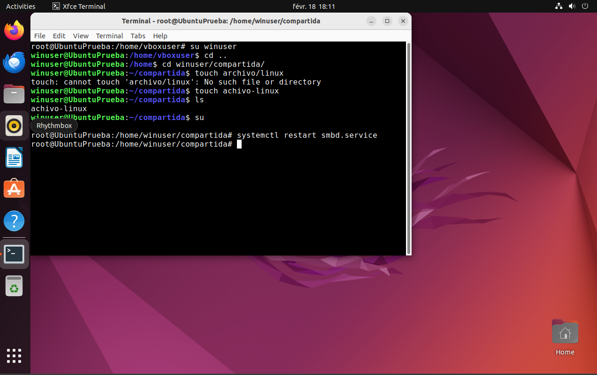

Paso 3: Instalacion de Samba y Vim en Ubuntu/Linux
Despues de comprobar que ambos sistemas estan actualizados y funcionan perfectamente, vamos a proceder a instalar el programa "Samba" en el Sistema Operativo de Linux/Ubuntu
Gracias al programa "Samba" podemos compartir archivos de diferentes Sistemas operativos
Iniciamos sesion en la maquina Virtual de Linux/Ubuntu, poniendo los datos creados con anterioridad.
Una vez dentro abriremos el terminal para escribir por comandos,
si por casualidad no hubiera ninguno instalado de forma predeterminada lo descargaremos de la pestaña "Ubuntu Software" (Icono con forma de bolsa de la compra)
dentro escribimos "terminal" y descargamos uno de los muchos disponibles
Ya con nuestro terminal descargado, iremos a la pestaña de aplicaciones (abajo a la izquierda con nueve ventanas) y abrimos el terminal
Ahora empezaremos a escribir los comandos dentro de la terminal
Con el comando su (Cambiamos a la raiz o root) nos pedira la contraseña con la que inciamos sesion.
Escribimos "apt upgrade" despues nos pondrá si queremos realizar la upgrade del sistema, le damos a "y" y esperamos que se actualice
El siguiente paso sera escribir "apt update", esperamos unos segundos que se actualice
Instalamos "Samba" escribiendo el comando "apt install samba", aceptamos y esperamos que se instale
El siguiente paso es crear un nuevo usuario para compartir los archivos, para ello usamos el comando "adduser winuser", escribimos la nueva contraseña del nuevo usuario y añadimos los datos y aceptamos
el siguiente paso es cambiar al nuevo usuario y crear una carpeta con los permisos de poder compartir. Para ellos lo primero usamos el comando "su winuser"
como estamos en la entra del usuario anterior usamos el comando "cd .." para retroceder en la carpeta, despues escribimos "cd winuser" para entrar en la carpeta del usuario recien creado.
Ahora que ya estamos en la carpeta del usuario, vamos a crear una carpeta para ello escribirmos el comando "mkdir compartida"(Compartida sera el nombre de la carpeta.
Si quieres ver la carpeta en el terminal escribe el comando "ls" para que se muestre por pantalla todo el contenido de la carpeta actual)
Ya con la carpeta creada, vamos a darle los permisos a la carpeta, usamos el comando "chmod 777 compartida/"
La razón por que hemos instalado Samba en Linux solo en Ubuntu es por que Windows ya posee un sistema de implementación de archivos con la que puede leer archivos de formato .smb.conf
Ahora enseñaré un video explicando el proceso de instalacion de Vim y su configuracion
El siguiente paso será añadir al usuario "winuser" al "Samba" y ponerle una contraseña, para ello se usa el comando "smbpasswd", pondremos una nueva contraseña para "Samba" (Podemos optar por poner la contraseñas añadidas anterirormente)
El siguiente paso sera cambiar al usuario "winuser" para crear un archivo dentro de la carpeta que se ha creado con anterioridad.
Con el comando "su winuser" cambiamos de usuario, despues usaremos "cd .." para movernos hacia atras y elegimos la ruta con el comando "cd winuser/compartida/", por ultimo creamos el archivo con el comando "touch archivo-linux"
Si todo ha salido bien usando el comando "ls" se mostrara en la terminal los archivos dentro de la carpeta actual, deberá aparecer el archivo recien creado.
El proximo paso será reiniciar los servicios de "Samba", para ello tenemos que cambiar al admin (comando "su"), volvemos a escribir la contraseña y escribimos el comando "systemctl restart smbd.service"
